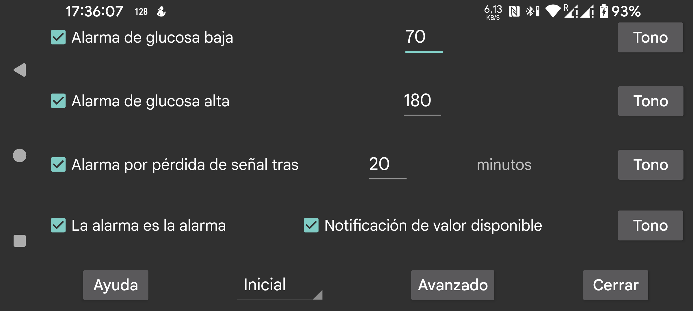

ar be de es fr it nl pl pt ru sv tr uk uz zh en
El valor de glucosa recibido por Bluetooth (Stream) puede usarse para activar una alarma.
Valor en el que la alarma debe activarse y por debajo del cual seguirá activa.
Valor en el que la alarma debe activarse y por encima del cual seguirá activa.
Indica cuántos minutos pueden pasar sin recibir por Bluetooth un valor de glucosa antes de que se active una alarma.
Las alarmas se detienen cuando sucede una de estas acciones:
A veces el sensor deja de funcionar. Si esta opción está activada, recibirás una notificación cuando vuelva a funcionar, pero solo después de haber visto en la propia app de Juggluco que faltaba el valor. Si solo sabes que faltaba el valor por la notificación de Juggluco o por la esfera del reloj, esta notificación no se activará.
Para cada alarma puedes indicar qué tono debe reproducirse y durante cuánto tiempo.
Si esta opción está activada, el tono usado para las alarmas de baja, alta y pérdida de señal se clasifica en Android como Alarmas. Esto significa que su volumen se controla con el control de volumen llamado Alarmas y que no se silencia al poner el teléfono en silencio o vibración. Si no está activada, se usa el canal de notificaciones en la mayoría de los teléfonos y el canal del sistema en Samsung Galaxy Watch 4-7. La notificación de valor disponible siempre se gestiona como notificación.
Indica a qué perfil se aplican estos ajustes. Así puedes alternar entre distintos ajustes de alarmas y de lectura en voz alta. También puedes configurar un perfil para que se active automáticamente a una hora concreta mediante Avanzado → Horario.
Abre el menú de alarmas avanzadas: muy baja, muy alta, pronto baja, pronto alta y activación de perfiles por horario.